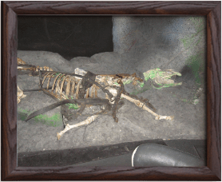

Questions & Réponses
Où se situe l'attraction Phantom Manor ?
L'attraction Phantom Manor se situe dans le Parc Disneyland à Frontierland. Le Manoir est à gauche de Big Thunder Mountain juste aprés Thunder Mesa Riverboat
Phantom Manor est-elle une attraction effrayante ?
Bien que l'attraction aborde un thème morbide et macabre, l'attraction n'est pas si effrayante que cela. Elle reste cependant déconseillée aux moins de 7 ans.
L'histoire de Phantom Manor est-elle vraie ?
L'histoire de Phantom Manor a été inspiré par divers histoires et légendes americaines de mariage maudit et/ou de lieux hantés.
L'excellent article "Til Death, Ghost Brides of United States" répertorie quelques-unes de ces histoires.
Des références au "Fantôme de l'Opéra" y sont aussi inclus :
- Mélanie prévoyait de s'enfuir avec son fiancé, au mépris de son père, tout comme Christine Daee voulait s'enfuir avec Raoul au mépris du Fantôme.
- La scène dans le boudoir de Mélanie, où le Phantom la regarde à travers le miroir, pourrait être un hommage au Fantôme parlant à Christine à travers son miroir.
- Mélanie et Christine se distinguent toutes deux par leur chant lyrique.
Est-ce de vrais ossements que l'on voit dans l"attraction ?
Lors de la conception de l'attraction, les "Imagineers" souhaitaient apporter une touche de réalité à l'histoire. Face au refus des autorités à exposer des ossements humains, ils ont opté pour ceux d'un cheval. On peut le voir à terre, au complet, dans Phantom Canyon.
Comment sont réaliser les fantômes dans la salle de bal ?
La question la plus courante que les visiteurs ont sur Phantom Manor concerne ces fantômes transparents qui semblent valser et faire la fête tout en disparaissant et réapparaissant à volonté.
C'est un truc simple ; il est en fait basé sur une illusion théâtrale commune du tournant du siècle qui a été nommée d'après John Henry Pepper.
Sur la photo ci-dessus se trouve un exemple d'illustration de l'illusion de Pepper en action, comme expliqué dans un manuel de 1889. À noter que le "fantôme" dans le panneau supérieur avec l'acteur représente la perception du public, et non un acteur réel. Le seul artiste réel est celui sous le public et hors de sa vue, éclairé par un projecteur.
Comment est réaliser la scène de la "Stretching Room" ?
« La pièce ne s’allongerait-elle pas par hasard ? » peut-on entendre dans la salle des portraits (Stretching Room). Mais est-ce vraiment le cas ?
Eh bien... Oui et non. En effet, la salle est un immense ascenseur qui permet d’amener les visiteurs du bâtiment principal vers une autre partie plus en dessous.
Ainsi, au moment où celui-ci descend, le plafond remonte pour donner l’illusion que les murs s’allongent.
Ce concept est la même dans tous les Parcs Disney, excepté ceux de Floride et Tokyo, où l'espace est moins problématique, de sorte que le second bâtiment est directement derrière la façade. Dans ces cas, le plafond s'élève et les visiteurs restent au même niveau.